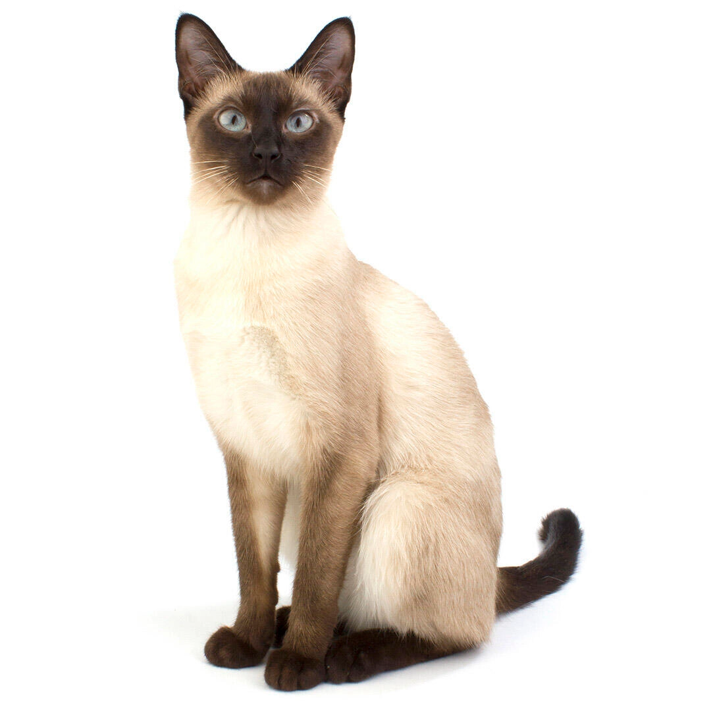

|
Breed
|
Image
|
Description |
|
Siamese
|

|
The Siamese cat is one of the first distinctly recognized breeds of Asian cats, known for its
blue almond-shaped eyes and sleek, muscular body. |
| Maine Coon |
|
The Maine Coon is one of the largest domesticated cat breeds, known for its friendly and gentle
nature. |
| Persian |
|
The Persian cat is a long-haired breed with a round face and short muzzle, known for its quiet
and affectionate personality. |
| Bengal |
|
Bengal cats are known for their wild appearance, featuring large spots and rosettes, as well as
their energetic and playful nature. |
| Sphynx |
|
The Sphynx cat is a breed known for its lack of fur, large ears, and playful and energetic
behavior. |